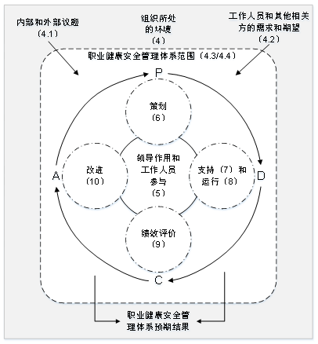

GB/T 45001-2020《职业健康安全管理体系 要求及使用指南》发布了！
国际标准化组织于2018年3月12日发布了ISO45001：2018 《Occupational health and safety management systems — Requirements with guidance for use》，代替了OHSAS 18001:2007，OHSAS 18002:2007。中国国家等同标准近日正式发布实施，标准号为：GB/T 45001-2020。
GB/T 45001-2020《职业健康安全管理体系 要求及使用指南》等同采用了ISO 45001:2018，并替代了原有的GB/T 28001-2011《职业健康安全管理体系 要求》和GB/T 28002-2011《职业健康安全管理体系 实施指南》。
新旧版对比，主要变化点
本标准与GB/T 28001-2011和GB/T 28002-2011相比，除编辑性修改外，主要技术变化如下：
——采用了《“ISO/IEC导则 第1部分”的ISO补充合并本》附录SL所给出的ISO管理体系标准通用高层结构；
——修改了术语和定义；
——采用了基于风险的思维；
——更加强调组织环境以及工作人员和其他相关方的需求和期望；
——强化了领导作用；
——强调了工作人员协商和参与；
——细化了危险源辨识和风险评价的要求；
——对文件化信息的要求更加灵活；
——细化了运行控制要求；
——细化了采购控制、承包方控制、外包控制要求；
——强化了变更管理要求；
——更加关注职业健康安全绩效、绩效监视和测量。
ISO45001:2018(GB/T45001-2020)标准将PDCA概念融入一个新框架中，如下图所示。

在新版标准中，一个组织将不仅仅专注于其直接的健康和安全问题，而是要考虑更多的社会期许。组织需要考虑自己的分包商和供应商；自身活动对周边社区、邻居造成怎样的影响。这会比仅仅关注与内部员工的条件更加广泛，意味着组织不能仅仅将其风险通过外包“嫁接”出去。
GB/T 45001-2020强调，这些职业健康和安全因素体现在组织的整个管理体系中，需要在组织经营策略过程中考虑，获得公司高层认可与带头行动、全员参与，并融入到组织日常运行中。这对于那些目前习惯于将责任授权给一个部门的安全经理而不是完全地融合入组织的运行中的使用者来说，将是一个很大的变化。
GB/T 45001-2020要求职业健康和安全因素是组织完整管理体系中不可分割的一部分，而不再只是附加的部分。
标准要求组织在策划职业健康安全体系时，应确定组织所需要应对的风险和机遇。风险和机遇存在于组织的存在的危险源、法规合规程度，以及组织所处的环境、相关方需求与期望中。标准要求组织要采取应对风险和机遇的措施，以确保体系能够实现组织的预期结果，实现组织在职业健康安全方面的持续改进。
标准转换有效期为3年
ISO新版标准发布后，被代替的旧版标准过渡期为3年，ISO 45001：2018于2018年3月12日正式发布，旧版过渡期截止2020年3月11日。自2021年3月12日起，企业原取得的OHSAS18001(GB/T 28001-2011)标准证书作废！企业需要在2021年3月12日前完成新版换证。
原文编辑: EHS资讯
原文链接: https://ehsinfo.cn/2020/03/10/职业健康安全管理体系要求及使用指南.html
版权声明: 转载请注明出处(必须保留作者署名及链接)